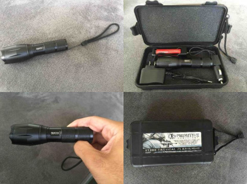

International & Domestic hazards have caused society to turn to a primitive tactic of self defense.
With the ongoing gun control laws, Americans are beginning to feel intimidated resorting to lethal weapon usage. Alternate self-defense tactics are becoming the new wave, and Tactical Mastery has the perfect solution for the ongoing dilemma. The Tactical Mastery XT-808 Flashlight has had an overwhelming response causing our factories to work 24/7 around the clock with online sales call center support to meet the rising demand of alternate defense.
"We saw the need for alternate defense – and we unraveled a Primitive solution."
The effectiveness of the Tactical Mastery XT-808!
Have you ever went to a morning screening for a theater release and walked outside to be blinded by the light? The sensitivity to light is known as photophobia. The discomfort felt is said to be unbearable to some, but the fact that the strobing light sequence is 100x more powerful than that the illustrated event is Tactical Mastery solution to stun the attacker and bring the figure from some to ALL. Being in control once the assailant is stunned gives you’re the opportunity to defend yourself by any necessary.
The Tactical Mastery XT-808 has several uses other than its demanding tactical solution. The XT-808 can be used in everyday events including but not limited to:
- Evening exercises
- Construction and Auto Repairs
- Home Inspections
- Recreational Purposes
- Games
Protecting yourself and your loved ones is important and its never been so convenient. Give yourself some added relief when sending your children off to college, evening events and hazardous conditions. Don't be blinded by the light and invest in multiple Tactical Mastery XT808 Flashlights now for added discounts!
The same flashlights that help protect our armed forces are now available to you directly with no added cost. Here’s list of government agencies that utilize tactical flashlights on day to day basis:
- Coast Guard
- U.S Navy Seals
- Policemen
- U.S Search & Rescue
- YOU!
"Yes, people pull the trigger - but guns are the instrument of death. Gun control is necessary, and delay means more death and horror."
-Elliot Spitzer
Traveling on family vacations is common amongst our American citizens. The underlying problem with traveling with a concealed weapon is state to state laws require different permits which can cause you to be "illegally" traveling with a weapon. The Tactical Mastery XT808 has no requirements and bars by law and can be stored in your vehicle at all times.
We Tried The Tactical Mastery Flashlights To See For Ourselves:
Our Review:
Upon receiving 4 Tactical Mastery XT808 Tactical Flashlight, we could already tell by it's packaging that these was a serious lights. They came in protective cases similar to a handgun. The light itself is small and sleek, with various zoom settings and the coveted "strobe mode" and "SOS" that every one loves.
After putting in the batteries and trying them out, it's clear that this these are the brightest flashlights we've ever held. And after turning on the strobe mode for 5 seconds we had to turn it off because it was incredibly disorienting.
After playing with the light for just 5 minutes, it's obvious why so many people are buying these. This is clearly a tool you can and should take with you everywhere.
This is not a light you want to be caught on the receiving end of!
These $200 lights are currently selling for 75% off their normal price! So it's a good time to get them at a discounted price. If you want to make sure you and your loved ones are always prepared for the worst, this flashlight is a great start. It has our vote so much that we made sure everyone on our staff had at least 4.
CHECK AVAILABILITY